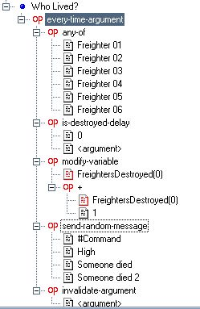

|
|
|
FRED CookbookOccasionally while reading HLP or other FS2 boards someone will pose an interesting FREDding problem or solution. Rather than lose them to the mists of time I'll post them up here. The person responsible for the post will be credited. Editing may be performed in order to help get the message across better or for reasons of space. A link to the original post will be included of course. Split second timing?Adapted from a question by Axem posted on HLP Scenario : In order to get a piece of music to play at the correct time Axem needed to trigger a SEXP half a second after something else had occurred. Unfortunately the entire SEXP system is built around the use of integers so there is no simple way to do this. Solution : In the end it was Axem himself who solved the problem in a brilliantly simple piece of SEXP hacking. He placed a ship with a speed of 50m/s in the game and using the distance SEXP measured the time it took to travel 25m. That of course takes half a second exactly. Who lived?Adapted from a question by Blitzerland posted on HLP Scenario : The mission has six friendly transports. If five survive the mission, command sends a certain message. If three survive, a different message. If they are all destroyed or only one survives a third message is sent.
Solution 1 : This one was mine. Somewhat disconcertingly the one I originally posted wouldn't quite work as desired so I've edited it a little (In case your wondering it can't tell the difference between all the ships being destroyed and 1 surviving and it can on occasion send the 3 ships destroyed message when you've in fact lost 4. A little editing of the percentages would also solve the problem though.) Pros : Simple. Works with retail Additions : The do-nothings would be replaced with the send-messages of course. I've grouped all the freighters into a wing to make it easier to show but this is a really bad practice in real life FREDding. Walkthrough : Upon mission completion the 5 Survive event is checked immediately. If 5 or 6 ships jumped out then it's message will be played and the next two events can't possibly come true (preventing you hearing the 1 ship and 3 ships survived messages if you save 5 of them). If it fails then 1 second later the 3 Survive event is checked. If it succeeds it sends a message saying that 3 or 4 ships escaped. If this also fails then and only then does the 1 Ship Survives event get checked a second later. If less that 1 percent departed then it means that the ships are all dead so no message is sent. Otherwise the message is sent saying that 1 or 2 ships survived.  Solution 2 : This one was mainly Trivial Psychic's but with refinements by Hippo. Pros : Compact. Requires only one event. Gives the player feedback every time a ship is lost Additions : The messages in this SEXP all make use of the $variable option which allows a message to contain a variable. Walkthrough : This event checks all 6 freighters to see if one of them has been destroyed throughout the entire mission. When one has it updates a variable so that the number of freighters destroyed can be output in the message. The Random-Message SEXP is used to prevent the message from being as repetitive. Finally the invalidate-argument is used to remove that particular ship from the list of ships checked (otherwise the event would trigger 5-6 times a second.
Solution 3 : Another one of mine. It's basically just an improvement on the above one. Pros : No repetition of messages, Requires only two events. Gives the player feedback every time a ship is lost Walkthrough : The first event is pretty much the same as the above. It waits till one of the ships is destroyed and removes it from the list same as above. However instead of sending a message it sets a variable which acts as a flag telling another event that it is time for it to trigger. The second event holds a list of message names. One of these is selected at random and played. The message is then removed from the list of names and the flag variable is set back to zero to denote that the message has been played. |